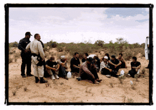
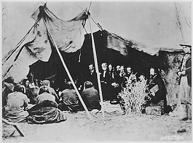
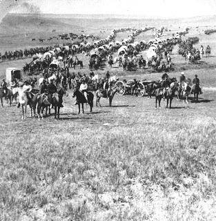
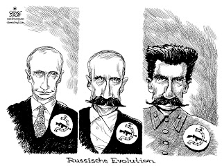

Friday, August 31, 2007
Free Larry Craig!

Jose Luis Vela of Alton, Texas stands accused of sexually assaulting two men during parties at his house. On the strength of criminal complaints from the two alleged victims, Vela was arrested, and investigators from the Sheriff's Department "searched his home and office for evidence that would corroborate witness statements," reported local television affiliate KGBT.
As it happens, Vela is Alton's chief of police, and the alleged victims are his employees. The latter claim that they were assaulted during parties at Vela's home that involved the use of alcohol and drugs taken from the property room at the police station.
This squalid affair -- which, unfortunately, seems typical of the troubled Alton municipal government -- offers a pretty good example of how a criminal investigation should unfold. There is the accusation of a specific crime (and a pretty horrific one) against individuals. A criminal complaint was sworn out, an arrest made on the basis of multiple witnesses, and once the suspect was taken into custody police began canvassing for evidence to substantiate the charges.
None of those elements can be found in the incident that led to Senator Larry Craig's guilty plea on charges of lewd and disorderly conduct.
As I have previously established, I offer no brief on behalf of either soon-to-be-ex-Senator Craig or homosexual conduct of any sort. One reason for my disenchantment with Craig has been the suspicion that his much-discussed moral weaknesses left him compromised, and this appears to be true of the incident leading to his arrest in Minneapolis last June and his subsequent guilty plea.
Had be not been so concerned with image maintenance and damage control, Craig most likely would have fought the charge in court, as he should have -- not only on his own behalf, but also as part of the fight against the relentless growth of pre-emptive law enforcement.
The only evidence against Craig is the unsupported word of the police officer who arrested him. This isn't enough to establish guilt beyond a reasonable doubt, particularly in a case involving conduct that is not, on its face, illegal. The conduct in question is (I'll be charitable) eccentric and unsettling, but only by supplying a subtext of dubious reliability can it be called "lewd."
It is significant that Craig told a consistent story during his interrogation. It is just as significant that the officer's clear strategy was to maneuver Craig into a guilty plea by using a solo version of the legendary "Good Cop/Bad Cop" dialectic. And there may be some justification to Craig's anguished claim that the cop "solicited" and thereby entrapped him.
"Trust me -- I know what I'm doing": Actually, Detective "Sledge" Hammer rarely did. He also generally forgot to yell "Freeze!" before shooting. Clearly, the star of that mid-80s sitcom was a man ahead of his time.

Consider a couple of critical statements from Sgt. Dave Karsnia, who has the utterly thankless assignment of patrolling the restrooms at the Minneapolis-St. Paul International Airport:
*"I am trained in this, and I know what I am doing." (Am I the only one to hear an echo of Sledge Hammer's frequently uttered assertion of misplaced self-assurance, "Trust me -- I know what I'm doing"?)
*"I see it happen [the semaphore used to arrange homosexual bathroom trysts] every day out here now."
Like most people, I am gratefully unfamiliar with the covert signals used to conduct sexual transactions in public restrooms. I'd imagine that the same would be true of most jurors had Craig's case gone to trial, and those jurors would probably be inclined to defer to Karsnia as an expert witness. But he would be the only witness, as well as the sole accuser, regarding all of these charges.
A reasonably adept defense attorney could persuade a jury that someone as immersed as Karsina in the arcana of "cruising" can easily misinterpret innocuous behavior. Consider: A weary traveler of unusual physical stature, enters a restroom after a long flight and finds the stalls occupied. Understandably impatient, he peers into the stalls to see if one user is winding up his business.
Is this creepy and intrusive? Yes. Is it a prelude to a sexual overture? Not necessarily.
Once a stall becomes vacant, the traveler gratefully takes occupancy and -- wary of contaminating the slacks of his expensive suit on the bathroom floor -- assumes a "wide stance" that causes one of his feet to trespass in the adjoining stall.
Is this odd and unsettling? Sure. Is it a covert signal that means, "Come and get it"? Again, not necessarily.
But given Karsnia's background, an innocent action of that sort would likely be interpreted as a signal that the guy in the next stall over is cruising. That perception would color Karsnia's recollections of the encounter. And since Karsnia's recollections of what happened, and his "expert" analysis of those purported events, are all that the prosecution would have had if Craig had fought the charge in court, the Senator may well have been exonerated -- and should have. In fact, had Craig been willing to fight the charge, it may well have been dropped.
If he was as innocent as he now insists, Craig had a moral duty, as both a citizen and a self-described public servant, to fight the charge against him. Every innocent citizen has a moral duty not to reward abuses of state power by refusing to submit to unjust prosecution without a fight. That duty is even more pronounced on the part of those who call themselves our representatives.
On the same day he was pleaded guilty to the lewd and disorderly conduct charge, ironically, Craig volubly denounced the "Gestapo-like" tactics of the FBI in conducting a raid on the home of Alaska Republican Senator Ted Stevens, the GOP's paladin of pork.
He had a chance to do combat the police state, and flinched from the battle -- in all likelihood because he knew the charge would end his political career, even if he had been completely innocent.
That career was mortally wounded when Sgt. Karsnia flashed his shield beneath the partition separating him from Larry Craig. Since his career was over anyway, Craig had nothing more to lose if he had chosen to fight on behalf of principle. But he is a politician, and therefore not made of the stuff that inspires people to fight for principle.
The principle at the center of this sordid mess is alluded to in the thirty-eighth paragraph of the Magna Carta:
"No bailiff, on his own simple assertion, shall henceforth any one to his law, without producing faithful witnesses in evidence."
Agents of the state should not be able to convict citizens of crimes on the basis of their uncorroborated testimony. In our increasingly degenerate, authoritarian society, this kind of thing happens all the time, particularly when police are deployed to enforce "laws" that criminalize vices.
Had Craig fought the charges in court and won, I would have been the first to applaud him -- and then to demand his resignation.
Be sure to visit The Right Source and the Liberty Minute archive.
Wednesday, August 29, 2007
Illegal Immigration, Past and Present: An Exercise in Thinking Out Loud


A Border Patrol Agent detains 12 Mexican nationals apprehended near Sells, Arizona. Smuggled into the U.S. by a Coyote, the Mexicans shared a single canteen.
"Wherever there's a prohibition, there's a bootlegger" -- James Burnham, "Burnham's Laws," No. 5.
Indifferent to borders, the invaders swarmed over a rich and cherished land. Many of them were hungry and desperate, and the lure of economic opportunity was irresistible. Others were comfortable, and driven by vulgar greed. But every one of them crossed the border in defiance of laws and solemn agreements. From the perspective of those whose land they now occupied, each of them became a criminal the moment his foot touched their soil.
Because the invaders were covertly supported by their government -- including supposedly rogue elements of the military -- the first tentative trickle of illegal immigrants quickly grew into a deluge.
Protests over the invasion were met with solemn and dishonest assurances that the border would be enforced. But the government issuing those assurances was playing for time, waiting for the invaders to establish a foothold. It had gone so far as to create a highway -- the "Robber's Road" -- to facilitate the invasion. Elements of the government likewise secretly provided the squatters with food, water, and other necessities.
Some of the land's long-time residents, convinced that their nation was being quietly dispossessed, protested to their government. When that proved unavailing, they began to harass the illegal immigrants directly, sometimes to the point of bloodshed.
Once the squatters had firmly established themselves, all pretense was dispelled. A summit meeting was held; territorial demands were made to, and rejected by, the nation whose territory was under assault. Failing to secure the territory after which it lusted on terms it considered appropriate, the aggressor government prepared for war. And once "this machinery of government began moving, it became an inexorable force, mindless and uncontrollable," wrote Dee Brown in his classic study of the dispossession of the Plains Indians.
.gif){kind=link}

The Familiar Ritual of Dispossession: William T. Sherman presides over the signing of the Ft. Laramie Treaty.
The history of Washington's war on the Indians is a narrative of cupidity and corruption, aggression and avarice, deceit and dishonor. In examining the case of Washington's seizure of the Black Hills, however, I am struck by the cynical use of illegal immigration as an instrument of territorial conquest.
General George Armstrong Custer, who has a prominent place on my list of people I would kill if they weren't already dead,* was sort of a Coyote-in-Chief for the white settlers who flowed into the Black Hills. Despite the 1868 Ft. Laramie Treaty that solemnly promised the lands to the Sioux in perpetuity, Custer led what Evan S. Connell called "a creaking, jingling, clanking train of canvas-topped wagons and malodorous cavalrymen" into Sioux territory in search of gold.

Well-known as a mass murderer, he was also one of history's most consequential advocates of illegal immigration.
Of the Black Hills, the Laramie Treaty specified that "no persons except those designated herein ... shall ever be permitted to pass over, settle upon, or reside in the territory...." Ah, contended advocates of white settlement, that was before our gold was discovered on their lands, and this changes everything. Decrying the treaty as an "abominable compact," the Yankton (South Dakota) Press and Dakotanian complained: "What shall be done with these Indian dogs in our manger? They will not dig gold or let others do it."
In such frustrating circumstances, if you're the government, or interests wedded to it, the answer is obvious: You steal the land.


It was Custer who established the "Robber's Road." It was Custer who was ultimately tasked by the execrable Philip Sheridan to carry out "total war" against the Sioux when they refused to ratify the results of white illegal immigration by repudiating their rights under the Laramie Treaty in exchange for a mere fraction of what the land was worth.
Reading some contemporaneous newspaper editorials unearthed by Connell, I'm struck by how they resemble some of the themes embraced by the Mexican "reconquista" movement. Take, for example, this specimen from the Bismarck Tribune, which was published as Custer "reconnoitered" the Black Hills:
"This is God's country. He peopled it with red men, and planted it with wild grasses, and permitted the white man to gain a foothold; and as the wild grasses disappear when the white clover gains a footing, so the Indian disappears before the advances of the white man. Humanitarians may weep [for the Indian], and tell the wrongs he has suffered, but he is passing away. Their prayers, their entreaties, can not change the law of nature; can not arrest the causes which are carrying them on to their ultimate destiny -- extinction. The American people need the country the Indians now occupy; many of our people are out of employment; the masses need some new excitement. The war is over, and the era of railroad building has been brought to a termination ... and depression prevails on every hand. An Indian war would do no harm, for it must come, sooner or later...."
Isn't this more or less the same game being played by the Mexican government -- using illegal immigration as an economic "safety valve" by exporting surplus workers? The chief difference here, and it's not one that reflects well on the US Government of the time, is that the 19th century version of demographic warfare was actually intended to cultivate bloodshed.
When the Sioux tried to "crack down" on illegal immigrants, its actions were portrayed in the press as a terrorist campaign. As Connell writes, it had been widely anticipated that the "stampede of whites through Dakota Territory would bring war," and as the editorial quoted above indicates, most Yankees thought this would be a good thing. And obviously, the U.S. Government was capable of doing far deadlier damage to the Plains Indians than anything the Mexican Government could do to us. Yes, the Feds lost at the Little Bighorn, but this proved to be merely a setback on the road to Wounded Knee.
Amid the apocalyptic rhetoric generated by the immigration "crisis" (I write as someone who has made his own contribution), I find myself musing that perhaps the only people in this country who really have standing to complain about the problem are descendants of the Plains Indians.
This doesn't mean I think our nation should dissolve itself as an act of penance for the sins of our forebears. But I do believe we could profit from re-examining some of the premises and assumptions behind the immigration issue, the first being that Americans living today are uniquely besieged innocents facing an unprecedented invasion.
There are Americans living along the border whose lands and homes are under siege from Coyotes and drug smugglers. The question I pose is: Should we perceive such crimes as the unique product of illegal immigration, or as an illustration of the universal truth of Burnham's Fifth Law (see above)?
The logic of Burnham's observation is that wherever prohibitionist policies are enforced, criminal behavior -- including occasional violence to persons and property -- will result. If this is true of immigration from Mexico, then the way to reduce the violence would be to end the relevant prohibition. One way to end the siege of ranch properties along the southern border would be to announce that we would accept all of the immigrants Mexico is willing to send our way. This would put the Coyotes out of business immediately.
Would this be a good idea? I don't know, but it might not be any worse than what we're doing right now, which creates a thriving immigration black market while doing little to prevent illegal immigration. In this respect the prohibition on non-government-sanctioned immigration from Mexico makes exactly as much sense as prohibitionist policies toward alcohol, narcotics, and opioids. Which is to say, none at all.
As in so much else, the key to solving the immigration problem is to define the problem correctly, while bearing in mind another of Burnham's Laws: Where there is no solution, there is no problem.
Among the problems commonly attributed to illegal immigration are the dilution of our public culture through multilingualism, the expansion of the prison population, and the huge costs of welfare subsidies for illegal immigrants.
The question of a common language may be the easiest to deal with: There is no reason why governments cannot be compelled to conduct official business in English, and every reason to insist that they should. Government has no business dictating the language in which we conduct our private affairs. Most immigrants, absent government intervention to prevent assimilation, will learn English out of social and economic necessity.

A "Reconquista" Protest: Radicalized Mexican activists are theatrical, obnoxious, and sometimes violent -- but are they typical?
Recent studies of incarceration rates for immigrants and native Americans demonstrate that immigrants are not the source of a significant spike in crime; in fact, the findings suggest that immigrants are less likely to commit crimes than are native-born citizens. Granted, there are plenty of criminal syndicates -- some of them shockingly violent -- that draw from the immigrant population. The question, once again, is if enhancing the current prohibitionist approach is the most intelligent way of dealing with the specific problem of crimes committed by immigrants. And, once again, given the existing track record, I'm inclined to think it's about time to try something else, such as focusing law enforcement efforts solely and exclusively on prosecuting those who commit crimes against persons and property.
Where welfare subsidies for illegal immigrants are concerned, I earnestly believe that the focus is excessively narrow and entirely misdirected: Why make the immigrants the issue, as opposed to the welfare programs themselves? As Sheldon Richman points out, one would expect conservatives to cite immigrant welfare services in order "to convince the American people to dump the welfare state [by showing them] it is financially unsustainable." Rather than doing so, most conservatives profess anguished outrage that outsiders are an impermissible burden on our system of institutionalized plunder.
What is even worse, and more perplexing, than this unwonted conservative desire to preserve the sanctity of the welfare state is the way that many of them want to expand the role of the State in what remains of the private economy in the name of immigration control.
Consider the "No Gravy Train For Illegals" model legislation being promoted by some organizations as a way to address the "crisis." The proposal is built around two sets of recommendations, the first dealing with the public sector, the other with the private economy. Under the model, each state, county, and municipality would be urged "to pass a law that makes it illegal to provide anything whatsoever to an illegal alien":
From the government sector:
- It shall be illegal, by STATE LAW, to provide anything at all to illegal aliens including, but not limited to: welfare, food stamps, Medicaid, driver's license, business license, government housing, tax supported education, or any other assistance.
- There will be no state tax deductions for payments to illegal aliens.
- All government transactions will be done in English only (i.e. voter registration, employment applications, permits, etc).
From the private sector:
- It shall be illegal, by STATE LAW, to do anything at all for an illegal alien including, but not limited to: rent housing, sell real estate, sell vehicles or mobile homes, make loans, sell insurance, provide employment, provide indigent care, cash checks, enroll students, or provide transportation other than back to their country of origin.
The recommendations concerning government policy are sound. The ones dealing with the private sector are abhorrent -- and, frankly, totalitarian: They would effectively deputize every merchant and businessman as an informant and enforcer, or turn him into a criminal for providing a legal product or service to a customer of whom the government disapproves. It would be the duty of the businessman (or health care professional) to demand identity papers.
Laws of this kind have been passed in Oklahoma and Georgia, and are being considered elsewhere. An individual I respect who works as a spokesman for the organization that once employed me writes that "prosecuting either the American citizen or the illegal alien [under such a law] would deter the transaction, but prosecuting both the American citizen and the illegal alien would be best. Illegal aliens would find that they have nothing that they could do here: except to go home and get back in line with those seeking to legally immigrate."
Two problems with that assessment leap immediately to mind. The first of which is that my friend is assuming that quasi-totalitarian laws of this sort would eventually be enacted nation-wide; otherwise immigrants would simply migrate to states where such laws don't exist. The other problem is that this approach would actually expand the size and expense of the welfare state, since it would leave the existing structure intact while using access to it as an incentive for additional legal immigration.
By following this approach, we would end up with a larger, more expensive, and dramatically more intrusive version of the corrupt Leviathan State that presently rules us. Perhaps the government would succeed in keeping at least some brown-skinned, Spanish-speaking people out of the country, and for some people that seems to be a suitable trade-off.
In the current issue of The American Spectator, Tom Bethell -- a naturalized U.S. citizen and an authentic conservative -- suggests a radically different approach to immigration.
"Let those who want to work come," writes Bethell. "Pay them their wages, give them raises where necessary. Let them send money back home to Mexico, El Salvador, and the rest. But let's also discourage [better yet, abolish outright -- W.N.G.] government handouts, and keep them out of the embrace of union organizers. Let's also make sure that they don't vote."
The last recommendation is critical: The franchise is a red-letter distinction between citizen and non-citizen. And voting in a republic is a defensive exercise intended to keep the state at bay, rather than the ritual of participatory plunder it has become under our regime.
The desire to cultivate new client-constituencies is one reason both branches of the Establishment Party favor a larger immigrant population. It is also the reason why nothing will be done to limit immigration as long as we live under the current political system -- an authoritarian corporatist state supported by a degenerate mass democracy.
There is another possible outcome, however, one that is becoming increasingly likely. Should America finish its descent into an undisguised garrison state -- a process that is aided considerably by the immigration restriction movement -- our problems with both immigration and emigration will evaporate. All of us will live in a vast gulag as blighted as any Indian reservation -- which is where Washington deposited the Indians while it re-settled their lands with illegal immigrants.

A quick note --
As the title of this essay indicates, my opinions about immigration is in flux, and the foregoing represents an honest effort to think through the issue and some of its permutations. While I'm always interested to hear other points of view, in this instance I'm particularly eager to read what you think.
_____________________
*I'm only kidding, sort of.
Be sure to visit The Right Source and the Liberty Minute archive.
Tuesday, August 28, 2007
The Highway to Serfdom

A state-organized mob led by a Chekist (secret policeman) calls for the extermination of "kulak" farmers in Soviet Ukraine during the early 1930s.

"[T]he theory of the Communists may be summed up in the single sentence: Abolition of private property." -- Marx and Engels, The Communist Manifesto
Anastasio Prieto, a truck driver from El Paso, Texas, doesn't trust banks and prefers to carry his savings with him in cash. While this is a dangerous way to manage one's money, a cursory glance at recent headlines tends to validate Prieto's concerns about the stability of the fractional-reserve banking system.
During a stop at a weigh station in New Mexico on August 8, Prieto made a critical mistake: He cooperated with the police, assuming that as a law-abiding individual he had nothing to fear from them.
Never make that assumption.
A New Mexico state trooper asked Prieto for permission to search his truck for contraband, such as needles or cash in excess of $10,000. Displaying an ingenuousness that breaks my heart, the truck driver consented, informing the officer that he was carrying nothing illegal -- but admitting that he had $23,700 on board.
Never consent to a police search, for any reason.
Never admit to a police officer that you are carrying large amounts of cash.
Always assume that a police officer would make the same use of that information that would be made by any other armed and potentially violent individual: He would find some way to steal your money.
And that is exactly what the officer did to Prieto, with the help of comrades from the federal Staatspolizei -- agents from the Drug Enforcement Administration and the Border Patrol. Over his objections, Prieto was detained for several hours, photographed, and fingerprinted, while his truck was searched by agents with drug-sniffing dogs.
As Prieto had explained, his truck was devoid of contraband. So the police apologized profusely, returned his money, bought him a cold drink and sent him away with a friendly smile and a wave.
Oh, stop it! You're killing me! What country do you think we live in, anyway?
The police "forfeited" -- that is, stole -- Prieto's savings. The DEA agents who presided over the theft "told Prieto he would receive a notice of federal proceedings to permanently forfeit the money within 30 days and that to get it back, he'd have to prove it was his and did not come from illegal drug sales," reported the Houston Chronicle.
You see, under existing laws and recent legal decisions, "possession of a large sum of money" by a motorist "is `strong evidence' of a connection to drug activity."
So ruled the U.S. Court of Appeals for the Eighth Circuit in a decision handed down almost exactly a year before Prieto was robbed at gunpoint in New Mexico. The case was entitled "United States of America v. $124,700 in US Currency" (.pdf).
You see, it's not necessary to find the owner of the money guilty of anything; the money itself can be convicted of involvement in criminal activity and "punished" by being permanently taken into government custody.
Prieto has been told it will take a year for him to recover his stolen money, should the regime condescend to give any portion of it back. Meanwhile, he is apparently left penniless, with no funds to maintain the truck that is the source of his livelihood. The collectivist State ruling us treated Prieto in much the same way the Soviet state treated Ukrainian kulaks -- at least those kulaks who were permitted to live, anyway.
If our money can be seized from us simply because some agent of the State wants to, in what sense is it our property?
Summary seizure and "forefeiture" of property -- including cash -- by police is one of the larger gifts bestowed on our society by the murderous fraud called the "war on drugs." Ten years ago, Congress enacted a "reform" measure intended to rein in the practice, but as we see it is pointless to attempt to reform a practice that should be abolished outright.
Invariably, "forfeited" cash and goods are depicted as the ill-gotten gains of narcotics trafficking; it's never explained, however, how those supposedly dirty proceeds are magically cleansed once they are handed over to the police. The bounties seized by police are often used to buy the latest in tyranny tech, such pimped-out SWAT vehicles and other goodies for the jackbooted pests who are deployed to bring in the loot; this makes a nicely self-sustaining system of official corruption.
As the clip below documents, it's just nice to have some extra money to blow on kewl gadgets with little practical value:
Thanks to asset forfeiture, the Bridgeport, Connecticut police can simply steal the money to buy such cool toys without having to request it from officials who are expected to represent the interests of the local taxpayers.
In fact, asset forfeiture has made it possible for corrupt police departments (or do I repeat myself) to cut out courts and juries and get straight to the business of plunder.
To expedite the process, Bradenton, Florida's Police Department devised a "Contraband Forfeiture Agreement" (.pdf) for use by officers carrying out drug enforcement raids. Citizens who sign such agreements surrender their property -- such as cash or cars -- "to the DEPARTMENT free and clear of all claims or liens"; they also waive their due process rights. In exchange, the police agree not to prosecute.
Janie Brooks, a local resident in her mid-50s, was taken into custody by police who claimed to find drugs in her car. The automobile and $1,200 in cash were confiscated, and Brooks was intimidated into signing the agreement.
"He [the officer] kept rushing me, like, `Go ahead, things will be better if you did," recalled Brooks. "It was like, there's gonna be some big time stuff that happens to me if I don't sign it."
Asked for his expert opinion of the practice, law professor Joseph Little of the University of Florida overcame a tragic handicap -- decades of legal training -- to offer a sensible assessment: "It sounds like robbery to me."
Indeed it does -- robbery coupled with extortion and more than a hint of terrorism. And it was immensely profitable: The county's asset forfeiture fund at one point topped $150,000.
Using almost exactly the same methods -- traffic stops, contrived searches, and armed extortion in lieu of prosecution -- the Dallas County, Iowa Sheriff's Department sucked up $1.7 billion from motorists traveling along I-80 between 2002 and 2006. This profitable racket had to gear down just a bit after Sheriff Brian Gilbert was convicted of stealing $120,000 in stolen money.
But Gilbert's lenient sentence -- a $1,000 fine, a year's probation, and a brief term of "community service," rather than a prison term -- suggests that his comrades have a license to steal from the general public, as long as they don't skim from the State's take.
The same priorities governed the Soviet Union, of course: The police were free to expropriate the bourgeoise at whim, but stealing from the State was a capital offense.
Please be sure to visit The Right Source and the Liberty Minute archive.
Monday, August 27, 2007
September 11, 1857
 "You guys do know what that movie is about, don't you?" inquired the friendly young lady in the admissions booth as Korrin and I bought tickets to see September Dawn.
"You guys do know what that movie is about, don't you?" inquired the friendly young lady in the admissions booth as Korrin and I bought tickets to see September Dawn."Yes, of course," I replied, a twinge of puzzlement creasing my care-worn brow. "Are you required to offer a disclaimer of some sort for some reason?"
"No," she answered. "It's just that some people have been offended by the subject matter."
As we entered the theater in Nampa, I commented to Korrin that it seemed oddly fastidious of the management to express concerns about the content of that particular film, when elsewhere in the multiplex patrons -- by their own informed choice, one assumes -- were enduring an onslaught of adolescent sex humor (Superbad), reveling in hyper-violent revenge fantasies (War), or otherwise spending a couple of hours immersed in Hollywood-issue degeneracy.
I suspect that the reason September Dawn was singled out in this fashion was because it has been quietly but effectively branded an offense against "tolerance."
This is unfortunate: Of the films presently on offer, September Dawn is the only one representing a serious and commendable attempt to dramatize actual history -- in this case, the systematic, premeditated murder in southern Utah of 120 members of a California-bound wagon train.
The definitive (thus far) treatment of the Mountain Meadows Massacre is Will Bagley's award-winning book Blood of the Prophets. The following clip offers a concise summary of the episode:
The victims were Arkansans led by Alexander Fancher, whose Hugenot ancestors had fled France following the St. Bartholomew's Day Massacre. The perpetrators were militiamen and Paiute Indians whose efforts were organized and directed by local Mormon leaders. The atrocity was a calculated act of terrorism carried out in the context of the Mormon leadership's asymmetrical war with the federal government, which was becoming acute at the time the ill-fated wagon train arrived in Utah: President James Buchanan, believing (with some reason) that Mormon Prophet and territorial governor Brigham Young was bent on establishing a hostile theocracy, had dispatched a military force ("Johnson's Army") to remove Young and install a territorial government more to Washington's liking.
Critics have ruthlessly panned the film, many of them complaining that its depiction of fanatical Mormon murders and winsome Protestant victims is childishly one-sided. This criticism is sound, and the film -- as a work of entertainment -- would have benefited greatly had the director not been a stranger to subtlety.
But the problem here is with the story itself, which isn't fraught with ambiguities and complexities. The matter really was quite simple: Mormon priesthood leaders (the church has a lay priesthood), acting on oaths to avenge the deaths of Joseph and Hyrum Smith and in accordance with the doctrine of "blood atonement," conspired to annihilate an entire wagon train of innocent, inoffensive people. They did so in the belief that they were doing God's will, and that the killings had been ordered by their religious leaders, who were for all intents and purposes infallible.
In recent months, the Mormon leadership has finally admitted that local church leaders were involved in the massacre; this concession comes after 150 years of stolid stonewalling on the subject, beginning with Brigham Young's cover-up campaign in which he acted as an accessory after the fact to mass murder. Roughly two decades after the event, John D. Lee, an adopted son of Brigham Young who had a hands-on role in the killing was the only one to be convicted and executed for the crime.
 A tribute to a mass murderer: A statue of John D. Lee, the only individual convicted and punished for the killings at Mountain Meadows, can be found in downtown Washington, Utah.
A tribute to a mass murderer: A statue of John D. Lee, the only individual convicted and punished for the killings at Mountain Meadows, can be found in downtown Washington, Utah. Bagley contends -- convincingly, in my view -- that the crime itself was ordered by Brigham Young. September Dawn embraces that perspective, and in one of the few instances the film embraces nuance, the order from Brigham is portrayed more along the lines of "Who will rid me of this meddlesome priest?" rather than as a blunt directive from a standard-issue cinematic villain.
Given the vilification of the Arkansans in Mormon folk mythology, there is some irony in current protests from Mormon media figures that September Dawn demonizes the Mormon assailants and beatifies the victims.
Folk accounts of the wagon train depict it as a cross between a pack of Hell's Angels in Conestoga Wagons and a traveling brothel: The women were slatternly, the men uniformly violent and abusive, the children little more than curs. Included in the company (once again, according to myth) were Missourians who had helped drive out the Mormons during the so-called Mormon War of 1838 -- and one of them boasted of having the very gun that killed Joseph Smith. By this account, the wagon train arrived in Utah and immediately began heaping abuse on the Mormon settlers and poisoning livestock in order to rile up the Indians.
To their credit, contemporary Mormon historians reject this depiction of the victims, even though they still try to compartmentalize blame for the massacre by laying it exclusively at the feet of local Mormon leaders. As September Dawn tells it, Brigham was "in the loop," but left it to his followers to handle the details. This strikes me as a very plausible depiction.
Writer-Director Jonathan Cain does a suitable job establishing his setting, in which he presents a personalized drama involving four key fictional characters: Bishop John Samuelson (Jon Voight), his sons Jonathan (Trent Ford) and Micah (Taylor Handley), and Emily Hudson (Tamara Hope), an Arkansan who falls in love with Jonathan.
Bishop Samuelson is a polygamous husband to eighteen women. His younger son Micah has already started a seraglio of his own, but Jonathan -- who believes that marriage should be the product of genuine love, not dutiful compliance to doctrine -- has no interest in marrying anyone, at least until he sees Emily. Tasked by his father to spy on the emigrants, Jonathan finds himself spending time with Emily, with predictable results: They quickly fall in love, despite the cultural chasm separating them.
Emily is a Pastor's daughter, which puts her in a position analogous to Jonathan. They have a brief but illuminating conversation in which the stark differences between their faiths are quickly sketched out: To Jonathan, the emigrants, like all non-Mormons, are "gentiles," and it puzzles him that Emily's father doesn't seek to control those under his pastoral care. Emily, apparently believing Mormonism to be simply another variant of conventional Christianity, is just as puzzled by Jonathan's casual acceptance of authoritarian notions and his unfamiliarity with the Beatitudes.
This scene, although somewhat overbroad and anachronistic in tone (Emily sounds a bit too much like a 21st Century Megachurch Evangelical, rather than a mid-19th century Protestant pioneer), does offer a useful illustration of the distance that separates Mormonism from mainline Christianity in terms of doctrine and practice. This is particularly true of the high-octane, theocratic version of Mormonism taught and lived in Brigham's Caliphate.
When in the film Jonathan casually tells Emily that his father considers the beliefs of the emigrants to be "abominations," the character is accurately giving voice to the Mormon perspective on mainline Christianity. When the film's version of Brigham Young (Terrance Stamp, whose experience in playing the Kryptonian megalomaniac Zod offered valuable training for this role) speaks of blood atonement -- shedding the blood of those whose sins supposedly aren't covered by the blood of Christ, so as to give them an opportunity for exaltation among the "Gods" -- his dialogue is taken directly from documented sermons and writings.
And when Bishop Samuelson insists that his Mormon priesthood leaders are immune to error, he is preaching sound and unassailable doctrine -- from the Mormon perspective, then and now.
The atrocity at Mountain Meadows was the predictable product of a familiar set of ingredients: A power-obsessed, authoritarian leadership that cultivated a siege mentality among its followers; a murderously perverted form of altruism in which lethal violence directed at the targeted victims was depicted as a form of compassion (it would expunge their sins, after all, and give them a chance for salvation); and a doctrine of obedience that relieved followers of moral responsibility for carrying out the orders of their leaders.
Every time, and any time, those ingredients are combined, people will die in large numbers. This was true of the wars of revolution and empire following the Jacobin revolution in France; it was emphatically true of the quasi-genocidal campaign to "civilize" the American Indians (somebody really should make a film about the Sand Creek Massacre); and it was true at Mountain Meadows.
But it is also true of the ongoing war in Iraq, as well. There is no moral or material difference between Brigham Young infecting his followers with war fever and then turning them loose on helpless Arkansans, on the one hand, and the cynical exploitation of terrorism by Bush and Cheney to manipulate our nation into invading Iraq, on the other.
After all, we're told, the president knows so much more than we do, and those who carry out his orders -- whether to destroy a city or sexually torture a child -- partake of the president's moral immunity. And the Iraqis should be grateful to us for the humanitarian violence we've inflicted on them: Don't they know this is their only chance to embrace the gospel of democracy?
Double Video Bonus
Gratuitous as it might seem, I'm offering clips of two incendiary performances by the incomparable Thin Lizzy. The songs selected are on-topic: They deal with the bloody consequences of fanatical self-righteousness.
"Massacre"
"If God is in heaven, how can this happen here? In God's name they used weapons for the massacre...."
"Holy War"
"We are chosen; we are one; we are frightened of no one ... and no one will win this war -- this is the way, this is the law."
Please be sure to check out The Right Source and the Liberty Minute archive.
Thursday, August 23, 2007
The Last Full Measure ... Of Murderous Opportunism
 An armored vehicle patrols "liberated" Fallujah.
An armored vehicle patrols "liberated" Fallujah. "If the cause be not good, the king himself hath a heavy reckoning to make, when all those legs and arms and heads, chopped off in battle, shall join together at the latter day and cry all 'We died at such a place;' some swearing, some crying for a surgeon, some upon their wives left poor behind them, some upon the debts they owe, some upon their children rawly left. I am afeard there are few die well that die in a battle; for how can they charitably dispose of any thing, when blood is their argument? Now, if these men do not die well, it will be a black matter for the king that led them to it...."
John Kreisel of Vadnais Heights, Minnesota lost both of his legs in Fallujah last December. A roadside bomb detonated beneath his Humvee, killing two of Kreisel's buddies, Spc. Bryan McDonough, and Spc. Corey Rystad. Kreisel is a man in his mid-20s; he has a lovely wife, Katie, and two disarmingly cute sons, Elijah and Broden. A foundation has been established to help Sgt. Kreisel's family, which will have to spend hundreds of thousands of dollars to build a handicapped-accessible home.
Thanks to a newly inaugurated ad campaign, Sgt. Kreisel will soon become a national celebrity of sorts. A Republican front group calling itself Freedom's Watch has created a campaign featuring Kreisel -- along with other wounded Iraq veterans, and relatives of troops lost in Iraq -- intended to fortify support for continuing the war.
The ads will not be directed at the unpersuaded public: Most of them will run on Fox "News" and national radio programs that already retail the White House line -- such as Sean Hannity's daily three-hour "You're A Great American" circle-jerk. The purpose of the campaign is to pressure wavering Republicans in Congress to resist any effort to end the occupation of Iraq.
At the end of the ads viewers and listeners are provided with a toll-free number (1-877-222-8001). When I called it, I heard the following recorded message: "Thank you for calling Freedom's Watch. Our operators are currently helping Americans call Congress in support of our war on terror. We will get to you as soon as possible."
An activist who actually contacted a live operator has reported that once this happens "you're expected to take part in a survey before she puts you through to Congress. But there's a catch. The question asked goes something like this: Do you believe the Iraq war is important to the war on terror?... If you say no, the operator immediately thanks you but doesn't connect you to Congress."
The "Freedom's Watch" campaign is fronted by former White House spokesliar Ari Fleischer and funded by, among others, Mel Sembler (a major Republican fundraiser who headed the Scooter Libby Defense Fund and also founded a chain of "drug rehab" clinics that specialized in child torture). It is being conducted as a counterpoint to the anticipated release of the report documenting the "success" of the "surge," which will be presented by the Military Messiah du jour, David Petraeus -- even though it is being composed by the White House propaganda directorate.
It is a reflection of George W. Bush's omnivorous sense of entitlement, and the depraved ingenuity of the War Party's propagandists, that this campaign's first advertisement features Sgt. Kreisel, who displays the same misplaced devotion to Bush that Nicolas Chauvin purportedly demonstrated toward Bonaparte. By using Kreisel and others who have suffered in this needless war, Bush and his handlers are neatly inverting the warning from Henry V: The cause must be good, precisely because men have lost their limbs, minds, and lives in its service.
It wasn't enough that these corrupt, craven creatures -- none of whom has ever sacrificed anything on behalf of anybody -- staged an unnecessary, immoral war that deprived Kreisel of his legs, thereby leaving his young sons with an invalid father. Now they wish to extract from Kreisel's tragedy the last full measure of political advantage by using him to reinforce the prejudices of the Dear Leader's dwindling cohort of cult followers:
This squalid exercise perfectly encapsulates "Freedom" as defined by the Bushcisti:
Freedom consists in adhering to the Dear Leader's will in all things -- at whatever cost to you and your family; and since only those who echo the Dear Leader's voice are truly free, they alone should be allowed to participate. The purpose of the legislature is to ratify the Leader's decisions, and to appropriate money to carry them out.
Every totalitarian movement -- and by now it is clear to any honest and rational person that Bush-era "conservatism" deserves that description -- depends on the eager and energetic participation of the willfully ignorant; as the doxology of Orwell's dystopia recognized, "Ignorance is strength." The invincibly ignorant people who compose Bush's core constituency will have no difficulty swallowing and regurgitating the refrain "They attacked us" as a rationale for continuing the war on a country that had no connection whatsoever with 9-11. The only connection between Iraq and 9-11 is the outrage provoked in the Arab world as that country absorbed ten years of war (including criminal attacks on civilian infrastructure), bombing campaigns, and murderous sanctions dealt out by Washington.
As Orwell -- who understood the difference between patriotism and nationalism -- pointed out: "The nationalist not only does not disapprove of atrocities committed by his own side, but he has a remarkable capacity for not even hearing about them."
Because of the White House agitprop campaign, millions of people who already support the Dear Leader's war will "know" that Sgt. Kreisel lost his legs in a "terrorist" attack in Fallujah. Not one in ten thousand of them will know, or care about, the thousands of families living in that city who have been killed by American weapons since February 1991.
 Hey, cheer up, kid -- you're being liberated!
Hey, cheer up, kid -- you're being liberated!An Iraqi child, oddly ungrateful for America's generosity and sacrifice, laments the death of his friends from a U.S. airstrike against Fallujah.
For such people, outrage over the roadside bomb that mangled Kreisel and killed two of his friends cannot co-exist with disapproval of the indiscriminate killing of Fallujans in 2004 in a campaign to "pacify" the city. That act of "liberation" included the use of White Phosphorus as what an official Defense Department essay called "a potent psychological weapon against the insurgents...."
White Phosphorus is a hideous high-yield chemical weapon: A WP munition can create a kill zone as much as a quarter of a mile wide, within which victims are burned and suffocated. A U.S. soldier who witnessed the use of that weapon in Fallujah recounted: "It seemed like just a massive killing of Arabs.... Burned bodies. Burned children. Burned women. White Phosphorus kills indiscriminately."
 They made a desert and called it "liberation":
They made a desert and called it "liberation":Fallujah, as seen from space, shortly after "Freedom" arrived in the form of White Phosphorus bombs and other high-performance explosives.
In the Bu'ushist lexicon, it is "terrorism" to employ improvised weapons against occupation troops in Fallujah, while the use of high-yield chemical weapons by occupation forces against the city's civilians is "liberation." Just before commencing the "liberation" of the city, Lt. Col. Brennan Byrne, a Marine commander in Fallujah, explained the matter with admirable concision: "What is coming is the destruction of anti-coalition forces in Fallujah. They have two choices: Submit or die."
It is in the service of that vision of "freedom" that Sgt. Kreisel lost his legs.
(My thanks to Eric Larsen for providing me with the indispensable term "Bushcisti.")
Please be sure to visit The Right Source and the Liberty Minute archive.
Tuesday, August 21, 2007
Amerika, 2007

"Freeway Blogging": A problematic but inventive method of political protest.
Jonas Phillips is the third resident of Asheville, North Carolina to be arrested in recent weeks for displaying a pro-impeachment sign.
Unlike Mark and Deborah Kuhn, who were targeted for official abuse because of a display erected on their own property, Phillips was arrested for "freeway blogging" -- that is, displaying a sign on an overpass spanning the interstate near his workplace.

While different considerations apply to protests on "public" property, it's significant that Asheville authorities are finding it difficult to identify a specific offense with which to charge Phillips. That difficulty is symptomatic of institutional dishonesty: The Asheville Police Department can't afford to admit that it arrested Phillips because of the content of his sign, rather than because of some danger he protest posed to the public.
Last Wednesday (August 15), Phillips was "standing alone with my [Impeach Bush-Cheney] sign for about 10 minutes, when I was approached by Police Officer Russell Crisp," he recounted. "He asked me how long I was planning to stay there and I told him just a few more minutes because I had to go to work at 8:00. He asked for my ID and I obliged. I asked him if I was doing something wrong, and he said that his Sergeant was on the way and he was going to wait for him. So, I went back to my sign holding over the interstate."
If Phillips had been obstructing pedestrians, or imperiling motorists, Officer Crisp could have addressed the problem by warning the cooperative protester to leave. He didn't issue such a warning.
A few minutes later the Sergeant, Officer Randy Riddle, "showed up with a paper in his hand," continues Phillips. "He spoke briefly to Crisp, then walked over to me and told me to put down my sign, put my hands behind my back, and that I was under arrest! I was shocked and almost thought he was joking until he told me again to put down the sign and put my hands behind me and I was under arrest. So I peacefully agreed and he cuffed me. I asked him why I was being arrested, he told me I was in violation County Ordinance 16-2, (the print out in his hand that he didn't bother to read to me or show me.) He told me I was obstructing the sidewalk. I told him I was not and that officer Crisp had witnessed a guy walk by me moments before."
"Riddle yelled at me, `You were obstructing the sidewalk!' and `I'm sick of this sh*t!' then he said, `Here's your 15 minutes of fame buddy!' I looked back to see his name plate and he said in a mean condescending tone, `Yea, that's "Sergeant Riddle" get it right!' He then put me in Officer Crisp's police car. Riddle took my sign with him and I was taken downtown and booked by Crisp. I was never read my Miranda rights."
Two days later, the charges against Phillips had mutated from the relatively innocuous offense of "obstructing the sidewalk" -- which would hardly merit being handcuffed and stuffed into a police car -- to "endangering motorists."“The intent [behind arresting Phillips] was public safety and the banner being a hazard,” insisted Asheville police Capt. Wade Wood. “That’s basically to the benefit of the motoring public," which ran an imperceptibly small chance of being endangered should the activist lose control of his 5'X1' sign. It's likelier that motorists would be killed in a bridge collapse, or perhaps in an accident involving falling space debris. But Wood had to pull some charge out of his emunctory aperture, and this was the best he could do.
The littering charge is obviously an instance of content-based selective prosecution: Egler has presented dozens of photographs documenting the display of other posters -- including commercial advertisements and military recruiting pitches -- that were displayed without incident.
As I've noted before, many police departments increasingly operate under the "we'll find a reason" standard -- meaning that when given an opportunity officers will contrive some excuse to cite or arrest individuals who have committed no immediately recognizable offense. Cases like those of Jonas Phillips, Kevin Egler, and the Kuhns -- remember: three or more instances constitute a pattern -- suggest that police are particularly prone to display their creativity when dealing with certain forms of political protest.
In his valuable new book You Have No Rights: Stories of America in an Age of Repression, Matthew Rothschild, editor of The Progressive, has compiled dozens of accounts from Americans who endured harassment, arrest, and various forms of official mistreatment after exercising their right to protest peacefully.
In May 2004, Joe Previtera, a student at Boston College, staged a protest of the Abu Ghraib abuses outside a military recruiting center. He chose to mimic the iconic photograph of a hooded detainee standing atop a box with his arms outstretched and electrodes attached to his body.
Previtera was surrounded by four policemen who told him the bomb squad was on its way. He was arrested an jailed overnight on $10,000 bond, accused of making a "false bomb threat"; obviously, he hadn't made a bomb threat, but because one of the heroes in blue (they're all heroes, don't you know?) claimed to think the milk crate and wires could be a bomb, Previtera was charged with making a false threat. In the middle of his night in jail, Previtera was awakened by police who tried to catechize him about the virtues of the Iraq war: They "showed me pictures of U.S. soldiers with smiling Iraqi children," he recalled. "The officers told me these were pictures I'd never see in the media...."
Eventually the charges were dropped, but the point is that Previtera, like a growing number of others, spent time in jail for conducting a peaceful, legal protest the local police didn't like.
Rothschild describes how police in Miami, with $8.5 million in federal funding tucked into an $87 billion war appropriation, waged a literal street war against protesters during the December 2003 Free Trade of the Americas Summit. Police eagerly used tasers, pepper spray, rubber bullets, billyclubs, and other "non-lethal" weapons against peaceful and largely cooperative protesters.
At one point, riot police firing rubber bullets shot a female protester several times in the back; during the next morning's briefing, the black-clad champions of public order enjoyed a giddy laugh at the victim's expense:
According to Rothschild, Miami Police Chief John Timoney, who insisted that his troops had acted with proper "restraint," won praise nation-wide "for what is being called the `Miami Model'" of protest management.
The "Miami Model" could be described as Tiananmen Square minus the tanks, with non-lethal ammo ... for now:
With those images of our heroic local police in action fresh in your mind, please review this trailer for the 1986 ABC mini-series "Amerika," which portrayed the USA as a Soviet-dominated vassal state in which public order is maintained by Soviet-controlled UN peacekeeping troops in Imperial Stormtrooper outfits:
Adjusting for present geopolitical circumstances and relatively minor differences in the dominant ideology, "Amerika" in 1997 (as shown in the program of that name) is often not that radically different from America, 2007. Life is still relatively normal, despite the Terrorist Event That Changed Everything (a Soviet-engineered Electromagnetic Pulse in the television program, 9-11 for us).
Occasionally an armored personnel carrier will be seen ferrying ominously clad riot police to the site of some disturbance, and if you push just a little too far you can find yourself with a boot on your neck, rotting in a miserable dungeon, or receiving the unwanted attention of officials skilled in "enhanced interrogation techniques." You might even be summarily killed on the street for no good reason, by police officials who are entirely unaccountable.
At least the inhabitants of "Amerika" could point out that they had been conquered by a wily and resourceful foreign enemy. What's our excuse?
"Amerika" the mini-series ended on a note of ambiguous optimism. For us, I'm afraid, it only gets worse from here.
Please be sure to visit The Right Source and the Liberty Minute archives.
Monday, August 20, 2007
Briefly Considered: Red Phoenix Rising?

Item: "According to a poll last month by the Moscow-based Levada Center, 54 percent of Russians between 16 and 19 believe Stalin was `a wise leader,' and a similar number thought the collapse of the Soviet Union was `a tragedy.' (Two thirds also thought that America was a `rival and enemy' and 62 percent believed that the government should `deport most immigrants.') `Many of my classmates believe that some kind of Soviet golden era existed before the West came in and destroyed everything,' says Fillip Kuznetsov, an international-relations student at Moscow University. `They also believe the state is justified in doing anything it likes to its citizens in the name of some great cause.'"
Item: "President Vladimir Putin said he had ordered strategic bombers to resume regular long-range patrols Friday as the Air Force carried out maneuvers involving 20 strategic bombers over the Atlantic, Pacific and Arctic oceans," reported the Moscow Times. "One of those drills, involving 11 aircraft, prompted NATO member Norway to scramble F-16 fighter jets to observe and photograph the Russian planes as they flew over the Norwegian Sea. The group of strategic bombers, early warning aircraft, fighter jets and refueling planes represented the biggest show of Russian air power in that region since the early 1990s, said Brigadier General Ole Asak, chief of the Norwegian Joint Air Operations Center."

Item: "After a newly self-confident, oil-rich Russia teamed up with China in joint military exercises Friday, it is moving to reclaim the former Soviet Union's status as a global military power. A seven-year, $200-billion rearmament plan signed by President Vladimir Putin earlier this year will purchase new generations of missiles, planes, and perhaps aircraft carriers to rebuild Russia's arsenal."


My first thought, prompted particularly by the comment about the State "doing anything it likes to its citizens in the name of some great cause," was: The same neo-con cabal that has seized the U.S. executive branch has taken control of Moscow as well.
It makes more sense to believe that the Putin regime's embrace of a watered-down variant of Stalinism is at least in part a reaction to the militarist mania that has characterized Washington since the neo-cons -- who could be considered Trotsky's distant offspring -- took over. As I've noted elsewhere, Washington years ago replaced Moscow as the headquarters of the global collectivist revolution.
Managing relations with Russia would always be a challenge, even absent the ambitions of Putin and his siloviki. But in a display of the perverted genius peculiar to Washington, the Bush Regime has not only cultivated the worst elements of Russia's ruling clique, its behavior has provoked understandable concerns among the long-suffering Russian people and provided their rulers with a plausible foreign enemy.
For people living in Russia's "near abroad" -- Estonia, for example -- things are probably going to get unpleasant very soon. And Russia's status as a rising power in the most important economic realm -- energy -- will soon give Moscow greater leverage than its arsenal ever could.
Meanwhile ...
The U.S. is deeply in debt to foreign lenders, particularly China. Washington's military (I don't know that the collective possessive pronoun "our" still applies) has been all but used up in the Idiot King's Mesopotamian war. Because of that war, and the sanctimonious bellicosity of the Bush Regime, our nation's international prestige is at its lowest ebb. The machinery for a domestic police state akin to Stalin's is in place.
It seems to me that the last thing we need -- however useful it would be to our rulers, who are ever in search of new rationales for regimentation -- is a revived stand-off with Russia, particularly one that in relative terms is a more plausible rival than the Soviets. But that's just what we're likely to get.
On the lighter side, it's always fun to see The Simpsons vindicated as a source of political prophecy. Here's their take on the Golitsyn thesis:
Please be sure to visit The Right Source, and the Liberty Minute archive.
Friday, August 17, 2007
Our Ripening Reich
George W. Bush's chief delinquency as Chief Executive, according to Philip Atkinson, is leniency. He has been too indulgent of the masses and their delicate moral sensibilities, which would be offended by the spectacle of blood and horror that is necessary to pacify Mesopotamia and terrify the Islamic world into acquiescence.
At the outset of the 2003 assault on Iraq, wrote British expat Atkinson in an August 3 essay for Family Security Matters (a project of the Center for Security Policy), Bush should have used "his" nuclear weapons "to slaughter Iraqis until they compiled with his demands, or until they were all dead. Then there would be little risk or expense and no American army would be left exposed."
"The simple truth," continues Atkinson, is that "modern weapons now mean a nation must practice genocide or commit suicide." But Bush's options are limited by "his cowardly electorate," and outright nuclear genocide simply isn't a viable option ... for now.
Thus Bush should emulate the actions of Julius Caesar in the conquest of Gaul, which he "pacified by mass slaughter," thereby building a rapport with an army he later used to crush domestic opposition in Rome.
"If President Bush copied Julius Caesar by ordering his army to empty Iraq of Arabs and repopulate the country with Americans, he would achieve immediate results: popularity with his military; enrichment of America by converting an Arabian Iraq into an American Iraq (thereby turning it from a liability to an asset); and boost American prestiege [sic] while terrifying American enemies."
"He could then follow Caesar's example and use his newfound popularity with the military ... to become the first permanent president of America, and end the civil chaos caused by the continually squabbling Congress and the out-of-control Supreme Court," concludes Atkinson. "President Bush can fail in his duty to himself, his country, and his God, but becoming `ex-president' Bush or he can become `President-for-Life' Bush: the conqueror of Iraq, who brings sense to the Congress and sanity to the Supreme Court. Then who would be able to stop Bush from emulating Augustus Caesar and becoming ruler of the world? For only an America united under one ruler has the power to save humanity from the threat of a new Dark Age wrought by terrorists armed with nuclear weapons."
Mr. Atkinson, as the quality of his prose suggests, is not a well-educated man (although some of his errors may reflect the difficulty of typing only with his left hand, his right being kept rigidly flat at the end of an outstretched arm in a perpetual fascist salute). Judging by his autobiographical essay, Atkinson's unbuttoned embrace of authoritarian politics and genocide as foreign policy are part of his personal psychodrama. Whatever.
Of critical importance here is the fact that this paean to genocidal dictatorship was published by a front group for a Washington think-tank that is intimately connected to the Bush Regime: The CSP's board members and advisers have included such people as Dick Cheney and Douglas Feith. This isn't a case in which a pseudonym-shielded degenerate posts something off-color in a reply thread on Daily Kos -- the kind of non-issue on which Bill O'Reilly can feast for a week or more.
While it is easy to exaggerate the significance of Philip Atkinson and his musings, it is nonetheless worth pointing out that the CSP, which is near the top of the Right Blogosphere's food chain, attracted the services of an undisguised fascist as a "contributing editor" for one of its front groups. (Thanks, once again, to Radley Balko for bringing Atkinson's post to my attention.)
Atkinson's post was removed by the website's administrator. As Lew Rockwell pointed out, this was most likely done not out of substantive disapproval of the post, but because the author had revealed the "esoteric" neo-conservative agenda -- implementation of which would require mass slaughter and military dictatorship under a quasi-divine Dear Leader -- to the profane masses.
Although he was more candid in describing the human cost of that vision, Atkinson is hardly the first to depict Bush as a potential world-savior clothed in divine destiny. In late 2005 I took notice of an anonymously written acrostic poem entitled "The Leader," which was found in an English-language textbook used by 16-year-old Pakistani students. The poem -- which is perhaps half a step above doggerel -- is set out in rhyming couplets that spell out "President George W. Bush," the purported embodiment of the virtues described.
Before reproducing that poem, decency dictates that I warn readers who have eaten that reading it may have unfortunate consequences -- such as decorating their monitor screens and immediate environment with the partially-digested remnants of their most recent repast.
With that caveat in place, here is the hymn to the Divine Emperor Bush:
The author of this nauseating little composition was most likely someone employed by the Rendon Group, the Lincoln Group, or some other propaganda mill subcontracted by the White House. While earnest in his intention to praise the would-be world emperor, it's obvious this guy was no Virgil.
Heck, he's not even in the same league as the Brownshirted bard who churned out this official prayer to (not on behalf of) Adolf Hitler:
"Fuhrer, my Fuhrer, sent to me from God, protect and maintain me throughout my life. Thou who hast saved Germany from deepest need, I thank thee today for my daily bread. Remain at my side and never leave me, Fuhrer, my Fuhrer, my faith, my light. Heil my Fuhrer!"
Our descent into outright tyranny hasn't yet reached the point where we are instructed to pray to the Dear Leader. However, in the event that we're clobbered by a terrorist attack -- in fulfillment of the fondest wishes of some exceptionally depraved Bu'ushists -- the Department of Homeland Security is prepared to deploy "Clergy Response Teams" to preach the gospel of unconditional submission to the State, as Shreveport, Louisiana's KSLA-TV reports:
"Could martial law ever become a reality in America? Some fear any nuclear, biological or chemical attack on U.S. soil might trigger just that. KSLA News 12 has discovered that the clergy would help the government with potentially their biggest problem: Us.... If martial law were enacted here at home, like depicted in the movie `The Siege,' easing public fears and quelling dissent would be critical. And that's exactly what the 'Clergy Response Team' helped accomplish in the wake of Katrina. Dr. Durell Tuberville serves as chaplain for the Shreveport Fire Department and the Caddo Sheriff's Office. Tuberville said of the clergy team's mission, `the primary thing that we say to anybody is, "let's cooperate and get this thing over with and then we'll settle the differences once the crisis is over."'" (Emphasis added.)
"For the clergy team," continues the report, "one of the biggest tools that they will have in helping calm the public down or to obey the law is the Bible itself, specifically Romans 13." As paraphrased by Dr. Tuberville, the message of that chapter is that "government's established by the Lord"; what he misses is that the text teaches that the sole legitimate function of government, which is subordinate to God's law, is to protect the innocent against lawless violence.
The Quislings in clerical garb employed by the DHS would preach to Americans a version of the same murderous idolatry taught by their forebears under the Third Reich: The role of religion is to sustain the State. The Nazis called this doctrine "Positive Christianity." I don't know what it would be called were our country to succumb to martial law, but I'm sure that the DHS is, even now, doing the appropriate market research.
Please be sure to visit The Right Source and the Liberty Minute archive.

At the outset of the 2003 assault on Iraq, wrote British expat Atkinson in an August 3 essay for Family Security Matters (a project of the Center for Security Policy), Bush should have used "his" nuclear weapons "to slaughter Iraqis until they compiled with his demands, or until they were all dead. Then there would be little risk or expense and no American army would be left exposed."
"The simple truth," continues Atkinson, is that "modern weapons now mean a nation must practice genocide or commit suicide." But Bush's options are limited by "his cowardly electorate," and outright nuclear genocide simply isn't a viable option ... for now.
Thus Bush should emulate the actions of Julius Caesar in the conquest of Gaul, which he "pacified by mass slaughter," thereby building a rapport with an army he later used to crush domestic opposition in Rome.
"If President Bush copied Julius Caesar by ordering his army to empty Iraq of Arabs and repopulate the country with Americans, he would achieve immediate results: popularity with his military; enrichment of America by converting an Arabian Iraq into an American Iraq (thereby turning it from a liability to an asset); and boost American prestiege [sic] while terrifying American enemies."
"He could then follow Caesar's example and use his newfound popularity with the military ... to become the first permanent president of America, and end the civil chaos caused by the continually squabbling Congress and the out-of-control Supreme Court," concludes Atkinson. "President Bush can fail in his duty to himself, his country, and his God, but becoming `ex-president' Bush or he can become `President-for-Life' Bush: the conqueror of Iraq, who brings sense to the Congress and sanity to the Supreme Court. Then who would be able to stop Bush from emulating Augustus Caesar and becoming ruler of the world? For only an America united under one ruler has the power to save humanity from the threat of a new Dark Age wrought by terrorists armed with nuclear weapons."
Mr. Atkinson, as the quality of his prose suggests, is not a well-educated man (although some of his errors may reflect the difficulty of typing only with his left hand, his right being kept rigidly flat at the end of an outstretched arm in a perpetual fascist salute). Judging by his autobiographical essay, Atkinson's unbuttoned embrace of authoritarian politics and genocide as foreign policy are part of his personal psychodrama. Whatever.
Of critical importance here is the fact that this paean to genocidal dictatorship was published by a front group for a Washington think-tank that is intimately connected to the Bush Regime: The CSP's board members and advisers have included such people as Dick Cheney and Douglas Feith. This isn't a case in which a pseudonym-shielded degenerate posts something off-color in a reply thread on Daily Kos -- the kind of non-issue on which Bill O'Reilly can feast for a week or more.
While it is easy to exaggerate the significance of Philip Atkinson and his musings, it is nonetheless worth pointing out that the CSP, which is near the top of the Right Blogosphere's food chain, attracted the services of an undisguised fascist as a "contributing editor" for one of its front groups. (Thanks, once again, to Radley Balko for bringing Atkinson's post to my attention.)

Atkinson's post was removed by the website's administrator. As Lew Rockwell pointed out, this was most likely done not out of substantive disapproval of the post, but because the author had revealed the "esoteric" neo-conservative agenda -- implementation of which would require mass slaughter and military dictatorship under a quasi-divine Dear Leader -- to the profane masses.
Although he was more candid in describing the human cost of that vision, Atkinson is hardly the first to depict Bush as a potential world-savior clothed in divine destiny. In late 2005 I took notice of an anonymously written acrostic poem entitled "The Leader," which was found in an English-language textbook used by 16-year-old Pakistani students. The poem -- which is perhaps half a step above doggerel -- is set out in rhyming couplets that spell out "President George W. Bush," the purported embodiment of the virtues described.
Before reproducing that poem, decency dictates that I warn readers who have eaten that reading it may have unfortunate consequences -- such as decorating their monitor screens and immediate environment with the partially-digested remnants of their most recent repast.
With that caveat in place, here is the hymn to the Divine Emperor Bush:

The author of this nauseating little composition was most likely someone employed by the Rendon Group, the Lincoln Group, or some other propaganda mill subcontracted by the White House. While earnest in his intention to praise the would-be world emperor, it's obvious this guy was no Virgil.
Heck, he's not even in the same league as the Brownshirted bard who churned out this official prayer to (not on behalf of) Adolf Hitler:
"Fuhrer, my Fuhrer, sent to me from God, protect and maintain me throughout my life. Thou who hast saved Germany from deepest need, I thank thee today for my daily bread. Remain at my side and never leave me, Fuhrer, my Fuhrer, my faith, my light. Heil my Fuhrer!"
Our descent into outright tyranny hasn't yet reached the point where we are instructed to pray to the Dear Leader. However, in the event that we're clobbered by a terrorist attack -- in fulfillment of the fondest wishes of some exceptionally depraved Bu'ushists -- the Department of Homeland Security is prepared to deploy "Clergy Response Teams" to preach the gospel of unconditional submission to the State, as Shreveport, Louisiana's KSLA-TV reports:
"Could martial law ever become a reality in America? Some fear any nuclear, biological or chemical attack on U.S. soil might trigger just that. KSLA News 12 has discovered that the clergy would help the government with potentially their biggest problem: Us.... If martial law were enacted here at home, like depicted in the movie `The Siege,' easing public fears and quelling dissent would be critical. And that's exactly what the 'Clergy Response Team' helped accomplish in the wake of Katrina. Dr. Durell Tuberville serves as chaplain for the Shreveport Fire Department and the Caddo Sheriff's Office. Tuberville said of the clergy team's mission, `the primary thing that we say to anybody is, "let's cooperate and get this thing over with and then we'll settle the differences once the crisis is over."'" (Emphasis added.)
"For the clergy team," continues the report, "one of the biggest tools that they will have in helping calm the public down or to obey the law is the Bible itself, specifically Romans 13." As paraphrased by Dr. Tuberville, the message of that chapter is that "government's established by the Lord"; what he misses is that the text teaches that the sole legitimate function of government, which is subordinate to God's law, is to protect the innocent against lawless violence.
The Quislings in clerical garb employed by the DHS would preach to Americans a version of the same murderous idolatry taught by their forebears under the Third Reich: The role of religion is to sustain the State. The Nazis called this doctrine "Positive Christianity." I don't know what it would be called were our country to succumb to martial law, but I'm sure that the DHS is, even now, doing the appropriate market research.
Please be sure to visit The Right Source and the Liberty Minute archive.
Subscribe to:
Posts (Atom)